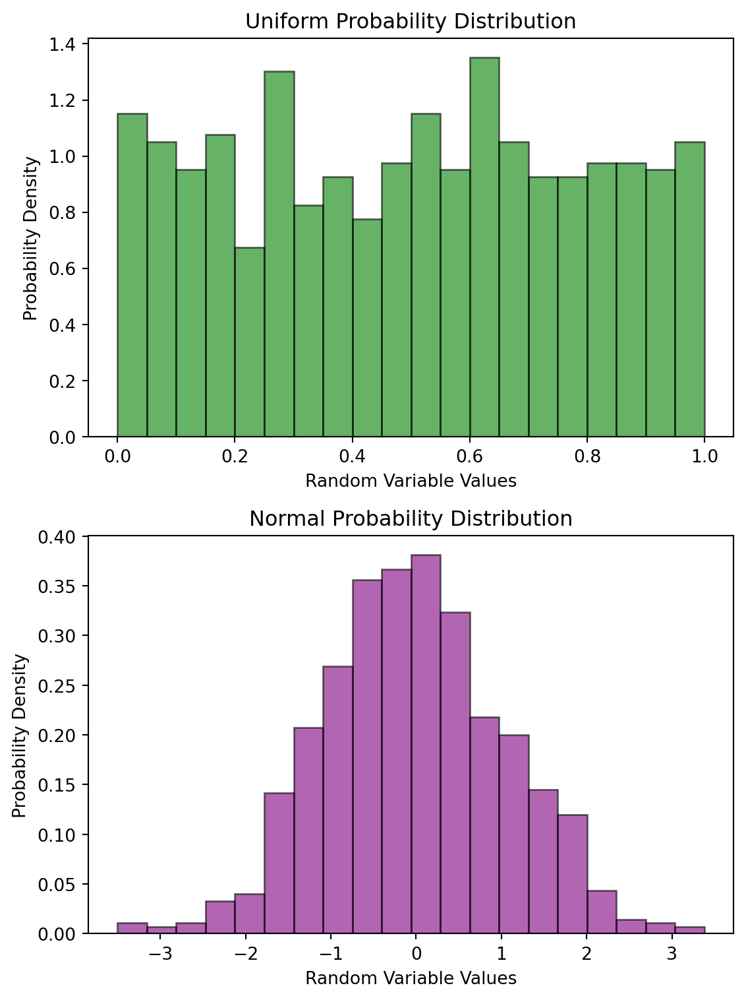
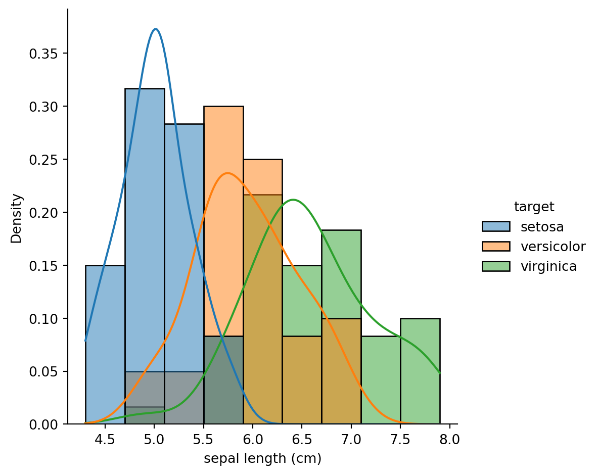

This blog post demonstrates concepts from probability theory and random variables.
Probability theory
Random variables
code
Author
Jonathan West
Published
November 21, 2023
Introduction
Probability theory is a fundamental component of machine learning, as it covers the study of uncertainty and randomness. It entails the work of making predictions in the absence of complete information. In this blog post we will walk through some concepts of probability theory, show how probability theory and random variables will be important moving forward in our study of machine learning. In particular, we will discuss logistic regression and naive bayes classifiers.
Probability Distribution example
One key aspect of probability theory is the probability distribution, which is essentially a mathematical function that provides the probabilities of occurrence of different possible outcomes in a given scenario. For instance, if we were to flip a coin, the probability distribution would be 50% heads and 50% tails. To get started, we will generate two sets of random data, to demonstrate the uniform and normal probability distributions.
import numpy as npimport matplotlib.pyplot as plt# Generate random data from two distributionsdata_unif = np.random.uniform(0, 1, 800) # Uniformdata_norm = np.random.normal(0, 1, 800) # Normalplt.figure(figsize=(6, 8)) # Create figure with two subplots# Uniform Distributionplt.subplot(2, 1, 1)plt.hist(data_unif, bins=20, density=True, alpha=0.6, color='green', edgecolor='black')plt.xlabel('Random Variable Values')plt.ylabel('Probability Density')plt.title('Uniform Probability Distribution')# Normal Distributionplt.subplot(2, 1, 2)plt.hist(data_norm, bins=20, density=True, alpha=0.6, color='purple', edgecolor='black')plt.xlabel('Random Variable Values')plt.ylabel('Probability Density')plt.title('Normal Probability Distribution')plt.tight_layout() # Avoid overlapping graphsplt.show() # Display

As you can see above, the uniform distribution appears as a rough rectangle, while the normal distribution appears as a bell curve. These are two common probability distributions, where outcomes are all equally likely, and where outcomes are more likely to be near the mean, respectively. Next lets apply some probability theory to a more practical set of data.
Load and examine data
First we will load the iris dataset from scikit-learn, and examine its features.
from sklearn.datasets import load_iris# Load iris datasetiris_data = load_iris()# Display some basic information about the datasetprint("Iris Dataset:")print(f"{len(iris_data.target_names)} Target names: {', '.join(iris_data.target_names)}")print(f"{len(iris_data.feature_names)} Feature names: {', '.join(iris_data.feature_names)}")print(f"Data shape: {iris_data.data.shape}")
import pandas as pd# Display first 5 rows of datadf = pd.DataFrame(iris_data.data, columns=iris_data.feature_names)df["target"] = iris_data.target# Iterate over data frame and replace target values with target namesfor target, target_name inenumerate(iris_data.target_names): df["target"] = df["target"].replace(target, target_name)df.head()
sepal length (cm)
sepal width (cm)
petal length (cm)
petal width (cm)
target
0
5.1
3.5
1.4
0.2
setosa
1
4.9
3.0
1.4
0.2
setosa
2
4.7
3.2
1.3
0.2
setosa
3
4.6
3.1
1.5
0.2
setosa
4
5.0
3.6
1.4
0.2
setosa
As shown above, this dataset contains 150 observations, with 4 features, and 3 target classes. By loading the dataset into a pandas dataframe, we can easily visualize the data and its features.
First, lets visualize the data with a kernel density estimate (KDE) plot, which allows us to visualize the distribution of observations in a dataset. The KDE plot is a smoothed version of the histogram, which shows the probability density function (PDF) of the data.
import seaborn as sns# KDE plot of data sns.displot(df, x="sepal length (cm)", kde=True, hue="target", stat="density")

Above we can see the KDE plot of the sepal length feature, with the target classes colored. The “stat” argument, in this case set to “density”, means that the KDE plot will be normalized such that the area under the curve is equal to 1. This graph allows us to understand the probability distribution of our data in terms of the target classes. We can see that the setosa class has a much smaller sepal length than the other two classes.
With this second graph, we can see that the sepal width feature is not as useful for distinguishing between the target classes, as the distributions are very similar. However, the setosa class does appear to have a slightly larger sepal width than the other two, and the versicolor class appears to have a slightly smaller sepal width than the other two. By accounting for all of the features, we can create a more accurate model for predicting the target classes, even when certain features are not as useful on their own. We will discuss this type of work in future blog posts, but we will show a simple way to predict the target classes from the data using logistic regression, and a naïve bayes classifier.
Logistic Regression
Logistic regression is a statistical model used for binary classification tasks, where the goal is to predict one of two possible outcomes, like true or false. However, it can also handle multi-class classification problems by using techniques like one-vs-all (OvA) or softmax regression. “One-vs-all” is exactly what it sounds like; we train a binary classifier for each class, to just predict if a given data point belongs to that class or any of the others.
Logistic regression is based on the idea of modeling the probability of an observation belonging to a particular class. It essentially predicts the probability of an observation belonging to a specific category or class. We use the sigmoid function to map the linear combination of input features to a probability score between 0 and 1, because the sigmoid function is bounded by 0 and 1, and conveniently approaches 1 as the input approaches infinity, and approaches 0 as the input approaches negative infinity.
Logistic regression works by calculating a linear combination of the input features, then applying the sigmoid function to this value to get the probability of the observation belonging to a particular class. We can define a numerical boundary to classify probability scores as indicating one class or the other.
from sklearn.model_selection import train_test_splitimport sklearnX = iris_data.data # Feature variablesy = iris_data.target # Target variable# Split the dataset into training and testing setsX_train, X_test, y_train, y_test = train_test_split(X, y, test_size=0.35, random_state=42)from sklearn.linear_model import LogisticRegression# create model and fit with datalog_reg_model = LogisticRegression(random_state=42, max_iter=1000)log_reg_model.fit(X_train, y_train)# Predict target values of test data using the trained modely_pred = log_reg_model.predict(X_test)# Examine performance of modelconfusion_matrix = sklearn.metrics.confusion_matrix(y_test, y_pred)print("Confusion Matrix:\n", confusion_matrix)
Confusion Matrix:
[[19 0 0]
[ 0 17 0]
[ 0 0 17]]
The confusion matrix is a common way to display classification results. It shows the number of true positives, false positives, true negatives, and false negatives. In this case we obtained a 3 by 3 grid due to the 3 target classes. The diagonal of the matrix shows the number of true negatives, while the off-diagonal elements show the number of incorrect predictions, specifically what class was correct and what class it was predicted as.
In this case with a fairly straightforward dataset, you can see that our model had false positives on our test data.
Lets visualize the confusion matrix with a heatmap.
The Naïve Bayes classifier is a simple probabilistic classifier based on applying Bayes’ theorem with strong (naïve) independence assumptions. It will allow us to classify the data into predicted target classes, based on the probability of the data belonging to each class, judged by the features. Naïve Bayes classifiers have found popularity for text classification, for example in dealing with spam detection.
It considers the probability of an observation belonging to a particular class, given the features of the observation, and classifies the observation as the class with the highest probability. Lets use the same iris dataset as before, and see how well the naïve bayes classifier does.
from sklearn.naive_bayes import GaussianNB# Initialize the Naive Bayes classifier (GaussianNB is used for continuous data), and fit to training dataclassifier = GaussianNB()classifier.fit(X_train, y_train)# Make predictions on the test datay_pred = classifier.predict(X_test)# Examine performance of classifierconfusion_matrix = sklearn.metrics.confusion_matrix(y_test, y_pred)class_report = sklearn.metrics.classification_report(y_test, y_pred, target_names=iris_data.target_names)print("Confusion Matrix:\n", confusion_matrix)print("Classification Report:")print(class_report)
As you can see, the naïve bayes classifier performed fairly well on this dataset, although not as well as the logistic regression model. Finally, lets visualize the confusion matrix with a heatmap.
In this blog post, we jumped into the concepts of probability theory and random variables which are essential to machine learning. Probability theory enables us to model uncertainty, make informed decisions, and construct intelligent systems. Random variables allow us to quantify and analyze various aspects of the world and the patterns and randomness which occur. These concepts are applied in many machine learning algorithms, as exemplified with logistic regression and naïve bayes classifiers.
I hope this blog post has been helpful in understanding these concepts, and I hope you return for future machine learning blog posts.
---title: "Probability Theory & Random Variables"author: "Jonathan West"date: "2023-11-21"categories: ["Probability theory", "Random variables", code]description: "This blog post demonstrates concepts from probability theory and random variables."format: html: code-tools: true---## IntroductionProbability theory is a fundamental component of machine learning, as it covers the study of uncertainty and randomness. It entails the work of making predictions in the absence of complete information. In this blog post we will walk through some concepts of probability theory, show how probability theory and random variables will be important moving forward in our study of machine learning. In particular, we will discuss logistic regression and naive bayes classifiers.### Probability Distribution exampleOne key aspect of probability theory is the probability distribution, which is essentially a mathematical function that provides the probabilities of occurrence of different possible outcomes in a given scenario. For instance, if we were to flip a coin, the probability distribution would be 50% heads and 50% tails. To get started, we will generate two sets of random data, to demonstrate the uniform and normal probability distributions.```{python}import numpy as npimport matplotlib.pyplot as plt# Set seed for reproducibilitynp.random.seed(42)# Generate random data from two distributionsdata_unif = np.random.uniform(0, 1, 800) # Uniformdata_norm = np.random.normal(0, 1, 800) # Normalplt.figure(figsize=(6, 8)) # Create figure with two subplots# Uniform Distributionplt.subplot(2, 1, 1)plt.hist(data_unif, bins=20, density=True, alpha=0.6, color='green', edgecolor='black')plt.xlabel('Random Variable Values')plt.ylabel('Probability Density')plt.title('Uniform Probability Distribution')# Normal Distributionplt.subplot(2, 1, 2)plt.hist(data_norm, bins=20, density=True, alpha=0.6, color='purple', edgecolor='black')plt.xlabel('Random Variable Values')plt.ylabel('Probability Density')plt.title('Normal Probability Distribution')plt.tight_layout() # Avoid overlapping graphsplt.show() # Display```As you can see above, the uniform distribution appears as a rough rectangle, while the normal distribution appears as a bell curve. These are two common probability distributions, where outcomes are all equally likely, and where outcomes are more likely to be near the mean, respectively. Next lets apply some probability theory to a more practical set of data.### Load and examine data First we will load the `iris` dataset from scikit-learn, and examine its features.```{python}from sklearn.datasets import load_iris# Load iris datasetiris_data = load_iris()# Display some basic information about the datasetprint("Iris Dataset:")print(f"{len(iris_data.target_names)} Target names: {', '.join(iris_data.target_names)}")print(f"{len(iris_data.feature_names)} Feature names: {', '.join(iris_data.feature_names)}")print(f"Data shape: {iris_data.data.shape}")``````{python}import pandas as pd# Display first 5 rows of datadf = pd.DataFrame(iris_data.data, columns=iris_data.feature_names)df["target"] = iris_data.target# Iterate over data frame and replace target values with target namesfor target, target_name inenumerate(iris_data.target_names): df["target"] = df["target"].replace(target, target_name)df.head()```As shown above, this dataset contains 150 observations, with 4 features, and 3 target classes. By loading the dataset into a pandas dataframe, we can easily visualize the data and its features. First, lets visualize the data with a kernel density estimate (KDE) plot, which allows us to visualize the distribution of observations in a dataset. The KDE plot is a smoothed version of the histogram, which shows the probability density function (PDF) of the data.```{python}import seaborn as sns# KDE plot of data sns.displot(df, x="sepal length (cm)", kde=True, hue="target", stat="density")```Above we can see the KDE plot of the sepal length feature, with the target classes colored. The "stat" argument, in this case set to "density", means that the KDE plot will be normalized such that the area under the curve is equal to 1.This graph allows us to understand the probability distribution of our data in terms of the target classes. We can see that the setosa class has a much smaller sepal length than the other two classes.```{python}sns.displot(df, x="sepal width (cm)", kde=True, hue="target", stat="count")```With this second graph, we can see that the sepal width feature is not as useful for distinguishing between the target classes, as the distributions are very similar. However, the setosa class does appear to have a slightly larger sepal width than the other two, and the versicolor class appears to have a slightly smaller sepal width than the other two. By accounting for all of the features, we can create a more accurate model for predicting the target classes, even when certain features are not as useful on their own. We will discuss this type of work in future blog posts, but we will show a simple way to predict the target classes from the data using logistic regression, and a naïve bayes classifier.### Logistic RegressionLogistic regression is a statistical model used for binary classification tasks, where the goal is to predict one of two possible outcomes, like true or false. However, it can also handle multi-class classification problems by using techniques like one-vs-all (OvA) or softmax regression. "One-vs-all" is exactly what it sounds like; we train a binary classifier for each class, to just predict if a given data point belongs to that class or any of the others.Logistic regression is based on the idea of modeling the probability of an observation belonging to a particular class. It essentially predicts the probability of an observation belonging to a specific category or class. We use the sigmoid function to map the linear combination of input features to a probability score between 0 and 1, because the sigmoid function is bounded by 0 and 1, and conveniently approaches 1 as the input approaches infinity, and approaches 0 as the input approaches negative infinity. Logistic regression works by calculating a linear combination of the input features, then applying the sigmoid function to this value to get the probability of the observation belonging to a particular class. We can define a numerical boundary to classify probability scores as indicating one class or the other. ```{python}from sklearn.model_selection import train_test_splitimport sklearnX = iris_data.data # Feature variablesy = iris_data.target # Target variable# Split the dataset into training and testing setsX_train, X_test, y_train, y_test = train_test_split(X, y, test_size=0.35, random_state=42)from sklearn.linear_model import LogisticRegression# create model and fit with datalog_reg_model = LogisticRegression(random_state=42, max_iter=1000)log_reg_model.fit(X_train, y_train)# Predict target values of test data using the trained modely_pred = log_reg_model.predict(X_test)# Examine performance of modelconfusion_matrix = sklearn.metrics.confusion_matrix(y_test, y_pred)print("Confusion Matrix:\n", confusion_matrix)```The confusion matrix is a common way to display classification results. It shows the number of true positives, false positives, true negatives, and false negatives. In this case we obtained a 3 by 3 grid due to the 3 target classes. The diagonal of the matrix shows the number of true negatives, while the off-diagonal elements show the number of incorrect predictions, specifically what class was correct and what class it was predicted as. In this case with a fairly straightforward dataset, you can see that our model had false positives on our test data.Lets visualize the confusion matrix with a heatmap.```{python}conf_mat_display = sklearn.metrics.ConfusionMatrixDisplay(confusion_matrix=confusion_matrix, display_labels=iris_data.target_names)conf_mat_display.plot()plt.show()```### Naïve Bayes ClassifierThe Naïve Bayes classifier is a simple probabilistic classifier based on applying Bayes' theorem with strong (naïve) independence assumptions. It will allow us to classify the data into predicted target classes, based on the probability of the data belonging to each class, judged by the features. Naïve Bayes classifiers have found popularity for text classification, for example in dealing with spam detection. It considers the probability of an observation belonging to a particular class, given the features of the observation, and classifies the observation as the class with the highest probability. Lets use the same iris dataset as before, and see how well the naïve bayes classifier does.```{python}from sklearn.naive_bayes import GaussianNB# Initialize the Naive Bayes classifier (GaussianNB is used for continuous data), and fit to training dataclassifier = GaussianNB()classifier.fit(X_train, y_train)# Make predictions on the test datay_pred = classifier.predict(X_test)# Examine performance of classifierconfusion_matrix = sklearn.metrics.confusion_matrix(y_test, y_pred)class_report = sklearn.metrics.classification_report(y_test, y_pred, target_names=iris_data.target_names)print("Confusion Matrix:\n", confusion_matrix)print("Classification Report:")print(class_report)```As you can see, the naïve bayes classifier performed fairly well on this dataset, although not as well as the logistic regression model.Finally, lets visualize the confusion matrix with a heatmap.```{python}conf_mat_display = sklearn.metrics.ConfusionMatrixDisplay(confusion_matrix=confusion_matrix, display_labels=iris_data.target_names)conf_mat_display.plot()plt.show()```# ConclusionIn this blog post, we jumped into the concepts of probability theory and random variables which are essential to machine learning.Probability theory enables us to model uncertainty, make informed decisions, and construct intelligent systems. Random variables allow us to quantify and analyze various aspects of the world and the patterns and randomness which occur. These concepts are applied in many machine learning algorithms, as exemplified with logistic regression and naïve bayes classifiers.I hope this blog post has been helpful in understanding these concepts, and I hope you return for future machine learning blog posts.## References1. https://numpy.org/doc/stable/reference/random/generator.html2. https://matplotlib.org/stable/gallery/statistics/hist.html3. https://seaborn.pydata.org/generated/seaborn.kdeplot.html4. https://www.datacamp.com/tutorial/understanding-logistic-regression-python5. https://maptv.github.io/blog/prob/6. https://scikit-learn.org/stable/modules/generated/sklearn.metrics.ConfusionMatrixDisplay.html